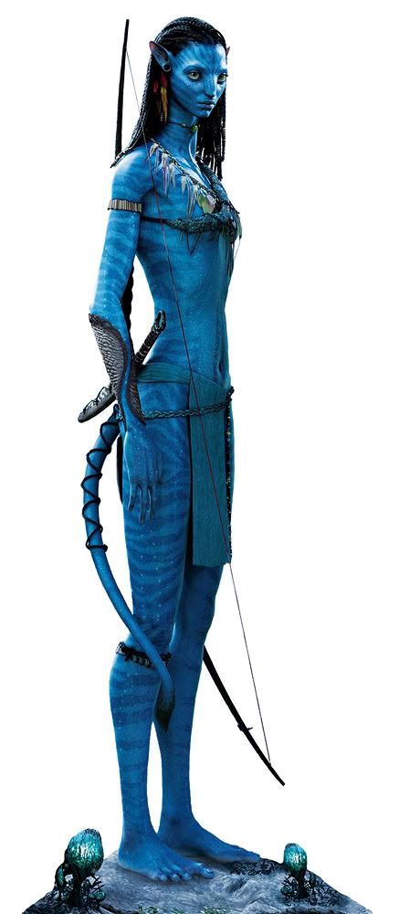

El mundo de Avatar
Menu
Avatar
Los Na'vi son en general humanoides en su anatomía, aunque también poseen características felinas como narices planas y bifurcadas, ojos grandes y redondos, orejas puntiagudas que pueden moverse de forma independiente y una cola larga y prensil que se usa para agarrar y mantener el equilibrio. El cuello es largo y el cuerpo delgado, con una cintura estrecha y alargada y hombros anchos que crean una parte superior de la espalda en forma de V. A pesar de sus delgadas proporciones, su musculatura está claramente definida y tienen aproximadamente cuatro veces la fuerza de un ser humano en óptimas condiciones físicas.
Pandora
Pandora es la quinta luna del gigante planeta gaseoso Polifemo, que orbita a su estrella Alfa Centauri A en el Sistema Alfa Centauri, el sistema estelar más cercano a nuestro propio Sol.
Haz click para un recorrido mágico por pandora

Na'vi
Los Na'vi (en Español: La Gente) son una raza de humanoides extraterrestres inteligentes que habitan en la luna llamada Pandora. Se sabe que los humanos se refieren a ellos como "los azules", "salvajes", "los locales", "hostiles" o "los nativos".
Los Na'vi y los Tulkun son las únicas especies extraterrestres conocidas que tienen un nivel de inteligencia comparada con los humanos. Aunque los Na'vi son cazadores y recolectores con una tecnología equivalente a la época paleolítica de la Tierra, son muy inteligentes y han desarrollado una cultura sofisticada basada en una profunda conexión espiritual con otras formas de vida en su luna, entre ellos y con una "diosa" llamada Eywa.
- Los Na'vi de la Jungla
- Los Na'vi del Oceano
El Clan Omaticaya (nombre Na'vi: Omatikaya que significa "Clan de la Flauta Azul") es una tribu Na'vi del bosque. Anteriormente vivían en un Árbol Madre en una de las enormes selvas de Pandora.
Los Omaticaya están liderados por Jake Sully y Mo'at (anteriormente Eytukan y temporalmente Tsu'tey) compartiendo una profunda conexión con el bosque. Los dos últimos Toruk Makto han sido miembros de este clan, sobre todo Jake Sully, el sexto Toruk Makto.
El Clan Metkayina y el Clan Ta'unui, como otros clanes al rededor de las arrecifes de Pandora, son un grupo oceánico de Na'vi que ha evolucionado a un estilo de vida acuático al desarrollar brazos y piernas en forma de aletas, colas anchas en forma de paleta, piel más verdosa, con franjas más acuosas, ojos azules y cabello rizado.
Haz click en esta imagen para ver la pelicula